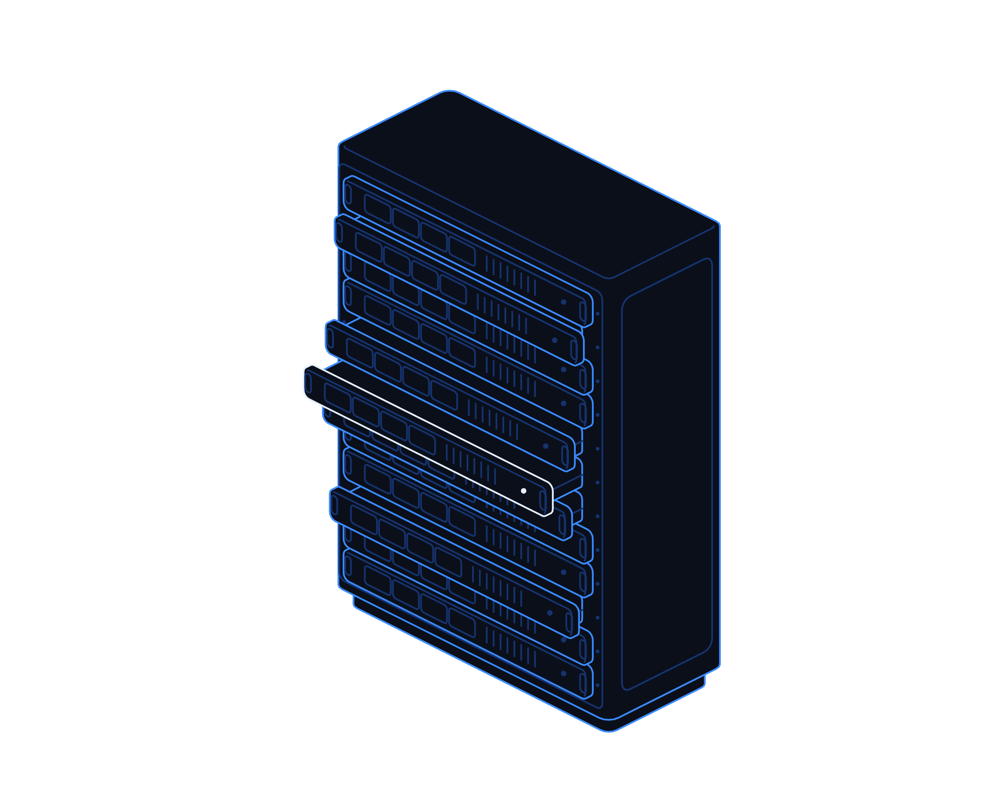
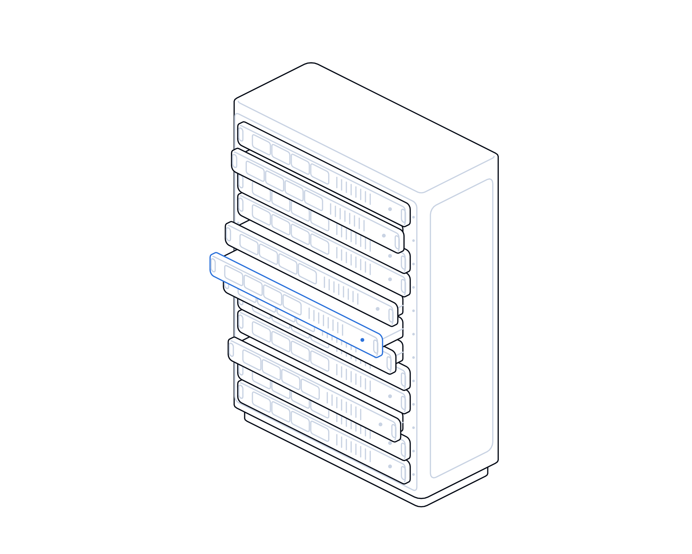

Cold Chain, Hot Target


Hot topics · Playbook
No. 12 · November 2026
Hot topics · Building systems and OT
Cold chain,
hot target.
Attackers warmed fridges and freezers in supermarkets across Europe by changing settings on internet-facing controllers. A practical playbook for finding, fencing and watching the building systems you rely on.
Transputec playbooktransputec.com
Inside
Contents
A practical guide to the building and operational systems most organisations forget they have connected: what happened to Europe's supermarket fridges, then what to find, fence and watch this week, this month and this quarter.
Foreword03
Introduction04
01What happened06
02Find and fence09
03Watch and fall back15
Questions and checklist21
Sources24
 Contents
ContentsCold Chain, Hot Target · Hot Topics · Playbook02 / 25
Foreword
The attack did not touch a single laptop. It changed a number on a fridge.
On the night of 11 October 2026, refrigeration controllers in hundreds of French supermarkets were switched into defrost mode. By morning, chilled and frozen food had been ruined and some equipment had overheated. Three weeks later a second wave hit stores in Belgium, Sweden, Ireland, Estonia and several other countries, and the UK's National Cyber Security Centre said it knew of a couple of cases here.
There was no ransom note and no stolen data. The damage was physical: food in skips, shelves emptied, staff working through the night. The systems involved were not part of the IT estate in most of these businesses. They were controllers installed and maintained by refrigeration contractors, often reachable from the internet so that engineers could check them remotely.
Fridges are only one example. Heating and ventilation, door access, CCTV, lifts, lighting and energy meters are run by the same kind of small, connected computer. In many organisations nobody can say how many there are, who looks after them or whether they can be reached from outside. This playbook is about answering those questions and acting on the answers.
The Transputec team
Transputec
Foreword Cold Chain, Hot Target · Hot Topics · Playbook03 / 25
Introduction
Three habits keep building systems out of the news.
The organisations hit in October and November were not careless with their IT. They had connected equipment that sat outside it, and that is where the gaps were.
Know what is connected
Keep a single list of every controller, panel and recorder that runs your buildings, with an owner, a supplier and a way it connects for each.
Fence it off
Take it off the public internet, replace default passwords, route supplier access through one controlled path and keep it apart from office IT.
Watch and fall back
Alert on setting changes, not just temperatures, and make sure staff can run the building by hand when a controller cannot be trusted.
Introduction Cold Chain, Hot Target · Hot Topics · Playbook04 / 25
If your freezer has a login page, someone else can find it.
In France, Europe's cyber agencies pointed to controller admin pages exposed to the internet and protected by weak or default passwords. That is a fixable problem, but only once you know where those pages are.
Introduction Cold Chain, Hot Target · Hot Topics · Playbook05 / 25
01
Part 01
What
happened.
Two waves of tampering with refrigeration controllers in Europe, and a separate investigation at US military bases.
01The October and November attacks
02What is confirmed, and what is not
Part 01 Cold Chain, Hot Target · Hot Topics · Playbook06 / 25
What happened
From French fridges to UK abattoirs in three weeks
The damage was physical: food in skips, shelves emptied, staff working through the night.
Overnight on 11 October 2026, attackers reached the refrigeration controllers of hundreds of French supermarkets and set them to defrost, so units heated their contents instead of cooling them.1,2 Intermarché said some units reached 50°C, and reports described equipment catching fire. Les Mousquetaires, Coopérative U, Carrefour, Monoprix and E.Leclerc stores were among those affected.2
France's CERT-FR issued an alert on 12 October covering Danfoss AK-SM and AK-SC controllers, later adding Copeland and Dixell XWEB supervisors, and warned that attacks were probably still under way.1 Danfoss said most units hit were older models it no longer updates, and ANSSI's head called for them to be taken off the internet or tightly filtered. The Paris prosecutor opened an inquiry.2
On 2 November a second wave struck. Delhaize, Carrefour, Spar and an IKEA store in Belgium, ICA and Coop in Sweden, 13 SuperValu stores in Ireland and a Selver store in Estonia were among those reporting tampered fridges and freezers, with further cases in the Netherlands, Portugal, Italy and Finland.3,4 A contractor for Delhaize said evaporators had been switched to defrost. Belgium's federal prosecutor opened a criminal investigation.4
The UK was not spared. The NCSC said it was aware of a couple of instances where vulnerable technology had been exploited here, and the Association of Independent Meat Suppliers said some members' cold units had been affected, though they were empty at the time.5 The NCSC's director of operations said the impact so far was minimal.
Separately, US officials are investigating freezer failures at around six military commissaries in August, including one at Fort Huachuca that entered defrost mode.6 Two people familiar with the matter said officials suspect Iran-linked hackers, but the cause and attribution have not been confirmed.7
Nobody has claimed the European attacks, and agencies say a shared method does not prove a shared attacker.4,8 Danfoss said the customers affected were mainly those who had not updated outdated software.4 What the cases share is simpler: small, connected controllers, reachable from the internet, running old software or default passwords, and owned by nobody in IT.
What happened Cold Chain, Hot Target · Hot Topics · Playbook07 / 25
Confirmed or suspected
What we know, and what we do not
Early reporting on live incidents changes. This is the position on 4 November 2026.
Question
Confirmed
Not confirmed
What changed
Remote setting changes that pushed units into defrost or high setpoints.1,4
Whether every reported case involved the same technique.
Which kit
Danfoss AK-SM and AK-SC controllers; Copeland and Dixell XWEB named by CERT-FR.1
The make of every affected unit outside France.
How they got in
ANSSI pointed to exposed admin interfaces and weak passwords in France.8
The entry route for the November wave and the US cases.
Known flaws
Danfoss fixed AK-SM 800A flaws, including a date-based password bypass, in 2025.9
That those flaws were used. ANSSI says they were not, in France.8
UK impact
A couple of UK cases known to the NCSC, impact so far minimal.5
How many UK sites are exposed today.
Who did it
Nobody has claimed responsibility.3
Any attribution, including the suspected Iran link in the US cases.7
What happened Cold Chain, Hot Target · Hot Topics · Playbook08 / 25
02
Part 02
Find and
fence.
You cannot protect a controller you do not know is there. Find it, take it off the internet and control who can reach it.
01What counts as a building system
02Building the inventory
03Exposure, passwords and supplier access
Part 02 Cold Chain, Hot Target · Hot Topics · Playbook09 / 25
In scope
Four families of connected building systems
Each is a small computer with a login, often invisible to IT. Researchers warned in August that such controllers could be hijacked.10

01
Refrigeration and cold rooms
Store supervisors, case controllers, cold-room panels and temperature loggers.
02
Heating, ventilation and cooling
Building management systems, air handlers, chillers and server room cooling.
03
Access control and CCTV
Door controllers, badge readers, video recorders and IP cameras.
04
Power and services
UPS units, generators, energy meters, lifts and lighting.
Find and fence Cold Chain, Hot Target · Hot Topics · Playbook10 / 25
This week
Build the building-systems inventory in five steps
A spreadsheet is enough. Sweden's cyber agency found quite a lot of exposed OT after the attacks; assume you have some too.3
01
Ask facilities and contractors first
Get every maintenance contract and ask each contractor to list the controllers they look after and how they connect to them.
02
Check what the internet can see
Register for NCSC Early Warning and scan your internet addresses, including separate broadband lines.
03
Walk the site
Look for routers, 4G modems and cables in plant rooms, freezer rooms and comms cupboards.
04
Record the essentials
Make, model, version, location, owner, supplier, how it connects, who holds the password, support status.
05
Agree an owner per device
One named person per system, usually in facilities, with IT and security named as advisers.
Find and fence Cold Chain, Hot Target · Hot Topics · Playbook11 / 25
What to check
Device by device: the questions that matter
Use these as the columns of your inventory. The red flags are what the attacks used.
Check
What good looks like
Red flag
Exposure
No admin page reachable from the internet, on any address.
A login page found by an external scan.
Passwords
Unique passwords, held by named people, changed from the factory setting.
Default logins, shared by every engineer for years.
Supplier access
One controlled route in, such as a VPN with MFA, logged and switched off when unused.
A contractor's always-on modem or open port.
Software
Supported model on the latest firmware, with vendor hardening applied.
End-of-life model or firmware years out of date.
Network
On a separate network segment, only talking to what it needs.
On the office network next to laptops and printers.
Records
Known-good configuration saved, including setpoints and defrost schedules.
Nobody knows what the settings should be.
Find and fence Cold Chain, Hot Target · Hot Topics · Playbook12 / 25
Bring supplier remote access under control
Remote access is why most of these controllers were connected in the first place. Contractors need it to monitor alarms and fix faults. The aim is to keep the service and lose the open door.
Why it matters
CERT-FR told operators to restore access only through a secure VPN or protected network, with contractor IP filtering as a stopgap at most.1
What to change
One managed route for all suppliers, with named accounts, MFA where possible and view-only access unless a change is needed.
Before you cut it
CERT-FR advises checking insurance and service terms before stopping a contractor's data feed. Agree the new route with them first.1
What to measure
Number of supplier routes into building systems, share with MFA, and how quickly a leaver's access is removed.
Owner
Facilities manager, with the IT lead
Bring this to the monthly review, with a date for each action.
Find and fence Cold Chain, Hot Target · Hot Topics · Playbook13 / 25
NCSC guidance
Eight principles for connecting operational technology
From the NCSC's Secure Connectivity Principles for OT, published with international partners in January 2026. They are goals, not minimum requirements.11
01
Balance the risks and opportunities
Connect a building system only when there is a clear business need, and record the risk you are accepting.
02
Limit the exposure of your connectivity
Nothing directly reachable from the internet. Prefer connections that start from inside and go out.
03
Centralise and standardise network connections
One route in for suppliers and remote staff, not a modem per contractor.
04
Use standardised and secure protocols
Encrypted, authenticated connections in place of old open protocols wherever the kit allows.
05
Harden your OT boundary and limit the impact of compromise
Firewalls between building systems and IT, and segments so one bad controller cannot reach the rest.
06
Log, monitor and plan to isolate
Log all connections, watch for the unusual and know how to cut a system off safely.
Find and fence Cold Chain, Hot Target · Hot Topics · Playbook14 / 25
03
Part 03
Watch and
fall back.
Assume a setting will one day be changed without permission. Make sure you notice quickly and can keep running.
01When a controller is tampered with
02Who owns building security
03Your plan
Part 03 Cold Chain, Hot Target · Hot Topics · Playbook15 / 25
Response
If a building controller has been tampered with
Based on CERT-FR and SentinelLABS advice. Physical safety and the stock come first, evidence a close second.
Make it safe
Move stock, switch to manual control or standby kit and check for overheating, fire or water risk.8
Preserve evidence
Photograph screens, export logs and configuration and note times before you reset anything.8
Cut the exposure
Remove internet access to the device and any similar devices on public addresses.1
Reset and reconfigure
Restart or factory reset, restore a known-good configuration, set new passwords and apply vendor hardening. A reset alone does not stop it happening again.1
Report and share
Report through the UK's official routes, tell the supplier and the manufacturer, and check your insurer's notification terms.
Ireland's Musgrave said its monitoring systems alerted it to the problem and it acted immediately. Fast detection limited the loss.3
Watch and fall back Cold Chain, Hot Target · Hot Topics · Playbook16 / 25
Ownership
Who owns building systems security?
The usual answer is nobody, or everybody. NCSC guidance on OT records also asks you to document third-party risks.12
Facilities owns the system
Facilities owns each controller, its contract and its fallback, because they run the building.
IT owns the network
IT provides the segment, the firewall rules, the single supplier route and the external scanning.
Security owns the watching
Security or your managed provider receives the logs and alerts and leads any incident.
Procurement owns the terms
Contracts set security duties for suppliers: named access, patching, notice of incidents and end-of-life dates.
Put building systems on the risk register with a named director as the senior owner.
Watch and fall back Cold Chain, Hot Target · Hot Topics · Playbook17 / 25
In practice
Three organisations, three buildings
Food distributor, two cold stores
Refrigeration on a contractor's modem
The gap
Cold-store controllers reachable on a public address so the contractor could check alarms remotely.
The fix
Exposure removed; contractor moved to a VPN with named logins; alerts added for setpoint and defrost changes.
The check
External scan shows no login pages; a test change triggers an alert within minutes.
Watch out
Confirm the alarm feed to the contractor still works after the change.
Professional services firm, three offices
Building management on the office network
The gap
Heating and access control panels on the same network as staff laptops, with factory passwords.
The fix
Panels moved to their own segment, passwords changed and recorded, supplier access through one route.
The check
A laptop on the office network can no longer reach the panels.
Watch out
Landlord-managed systems may sit outside your control. Ask the landlord the same questions.
Care home group, 12 sites
Medicine fridges and door entry
The gap
Medicine fridge loggers and door entry kit installed by different suppliers, with no single list.
The fix
Inventory built across all sites, an owner per home, and manual checks written into shift routines.
The check
Every site can show its device list and its last manual temperature check.
Watch out
Fallback must work at night, when fewest staff are on site.
Watch and fall back Cold Chain, Hot Target · Hot Topics · Playbook18 / 25
Priorities
Fix first what is exposed and matters
Plot each building system by exposure and by what happens if a setting is changed. Act on the top right first.
Monitor and plan
High impact, internal only
Alert on setting changes, save a known-good configuration and rehearse manual running.
Act this week
High impact, internet-facing
Remove exposure, change passwords and restrict supplier access now. Refrigeration, heating and access control usually sit here.
Maintain
Low impact, internal only
Keep on the inventory, keep supported and review once a year.
Close the door
Low impact, internet-facing
Remove exposure. Even minor kit can become a route into the rest of the network.
Internet exposure →
↑ Physical impact
Watch and fall back Cold Chain, Hot Target · Hot Topics · Playbook19 / 25
Your plan
This week, this month, this quarter
Owners are suggestions. Adjust them to your structure.
This week
List building systems with contractors. Register for Early Warning. Run an external scan. Take any exposed controller off the internet.
Facilities, with IT
This week
Change default and shared passwords on refrigeration, heating and access control. Check setpoints and defrost schedules.
Facilities manager
This month
Move supplier access to one controlled route. Put building systems on their own network segment. Save known-good configurations.
IT lead
This month
Set alerts for setting changes. Write and test manual fallback for cold storage, heating and doors.
Facilities and security
This quarter
Replace end-of-life controllers. Add security clauses to maintenance contracts. Rehearse a tampering scenario.
Head of facilities
This quarter
Report progress to the board with dated actions, owners and remaining risks.
Operations director
Watch and fall back Cold Chain, Hot Target · Hot Topics · Playbook20 / 25
Questions to ask
For your board, and for your suppliers
Ask them out loud. Vague answers are the finding.
Board
?Do we know every building system that is connected, and who owns each one?
?Could anyone outside change a fridge, heating or door setting tonight?
?If they did, how fast would we know, and could we keep running by hand?
Suppliers
?Which of our controllers can you reach remotely, how, and who on your team can log in?
?Are any of our devices end of life or behind on firmware, and what is your plan?
?Will you tell us within a set time if you suspect tampering on any customer's kit?
Questions and checklist Cold Chain, Hot Target · Hot Topics · Playbook21 / 25
Checklist
Is your cold chain locked down?
Tick what is true today. Anything blank is your next action.
A single list of connected building systems
With owner, supplier, model, version and connection for each.
Registered for NCSC Early Warning
And an external scan shows no building system login pages.
No default or shared passwords
Every account named, every factory password changed.
One controlled route for supplier access
With MFA where possible, logged and off when not in use.
Building systems separated from office IT
On their own segment, with firewall rules between.
Alerts on setting changes
Setpoints, defrost schedules and user accounts, not just temperature alarms.
Tested manual fallback
Staff know how to protect stock and run the building by hand.
Security terms in maintenance contracts
Including end-of-life dates and incident notification.
Questions and checklist Cold Chain, Hot Target · Hot Topics · Playbook22 / 25
Glossary
Words worth knowing
Operational technology (OT)
Computers that control physical equipment, such as fridges, boilers, doors and lifts, rather than handle data.
Building management system
Software and controllers that run heating, ventilation, cooling and other services across a building.
Controller
A small dedicated computer that runs a piece of equipment and usually has its own login page.
Setpoint
The target value a controller aims for, such as minus 18°C in a freezer.
Defrost cycle
A routine that warms a unit briefly to clear ice. Run for too long, it ruins the contents.
Internet exposure
When a device's login page or service can be reached directly from the public internet.
Default credentials
The username and password set by the maker, often published and widely known.
Segmentation
Splitting a network so that systems can only reach what they need.
End of life
When a manufacturer stops issuing security fixes for a product.
Early Warning
A free NCSC service that alerts UK organisations to exposed services and signs of compromise.
Glossary Cold Chain, Hot Target · Hot Topics · Playbook23 / 25
Sources
Sources and notes
Sources were accessed in November 2026. Where reports differ, we say so in the text. Early reporting on live incidents can change.
1
CERT-FR (ANSSI), CERTFR-2026-ALE-012, security incident targeting remote controllers of refrigeration installations, 12 Oct 2026, updated 16 Oct 2026. cert.cyber.gouv.fr/alerte/CERTFR-2026-ALE-012
2
The Hacker News, attackers heat French supermarket refrigeration, Oct 2026. thehackernews.com/2026/10/attackers-heat-french-supermarket.html
3
NBC News with Reuters, supermarkets across Europe hit by new fridge cyberattacks, 2 Nov 2026. nbcnews.com/world/europe/european-supermarkets-hit-new-fridge-cyberattack-rcna606972
4
The Hacker News, new wave of refrigeration cyberattacks hits supermarkets across Europe, 3 Nov 2026. thehackernews.com/2026/11/second-wave-of-cyberattacks-hits.html
5
BBC News (syndicated), UK also affected by cyber-attack which hit European supermarket fridges, 3 Nov 2026. yahoo.com/news/world/articles/uk-affected-supermarket-fridge-hacks-094349012.html
6
Nextgov/FCW, Pentagon investigates suspected cyberattack behind military freezer failures, 29 Oct 2026. nextgov.com/cybersecurity/2026/10/pentagon-investigates-suspected-cyberattack-behind-military-freezer-failures/416926
7
Nextgov/FCW, officials suspect Iran in series of cyberattacks on military base freezers, 29 Oct 2026. nextgov.com/cybersecurity/2026/10/officials-suspect-iran-series-cyberattacks-military-base-freezers/416934
8
SentinelLABS, Defrost and Disrupt: an assessment of Europe's refrigeration attacks, 3 Nov 2026. sentinelone.com/labs/defrost-and-disrupt-an-assessment-of-europe-s-refrigeration-attacks
9
CISA, ICSA-25-140-03, Danfoss AK-SM 8xxA Series, 20 May 2025, updated 26 Aug 2025. cisa.gov/news-events/ics-advisories/icsa-25-140-03
10
TechCrunch, a fresh wave of cyberattacks has hit Europe's supermarket refrigerators, 2 Nov 2026. techcrunch.com/2026/11/02/a-fresh-wave-of-cyberattacks-has-hit-europes-supermarket-refrigerators-destroying-food-across-countries
11
NCSC with international partners, Secure connectivity principles for operational technology, Jan 2026. ncsc.gov.uk/collection/operational-technology/secure-connectivity
12
NCSC with international partners, Creating and maintaining a definitive view of your OT architecture. ncsc.gov.uk/collection/operational-technology/definitive-architecture-view
Sources Cold Chain, Hot Target · Hot Topics · Playbook24 / 25
Want a second pair
of eyes on your buildings?
Transputec helps UK organisations find connected building and operational systems, take them off the internet, bring supplier access under control and watch for changes around the clock.
Book a building systems reviewtransputec.com
Read the companion report
Back to No. 08 · When the cloud goes dark
Transputec · Hot Topics · No. 12